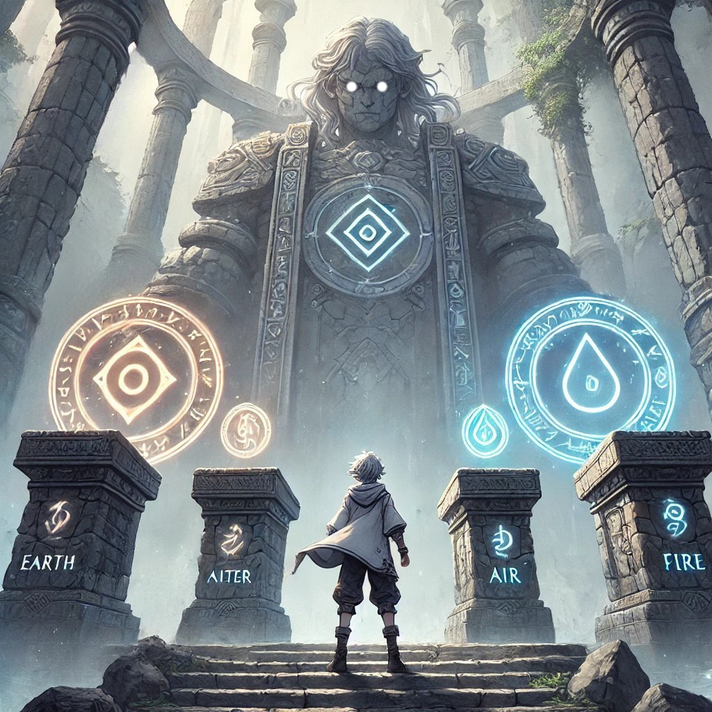
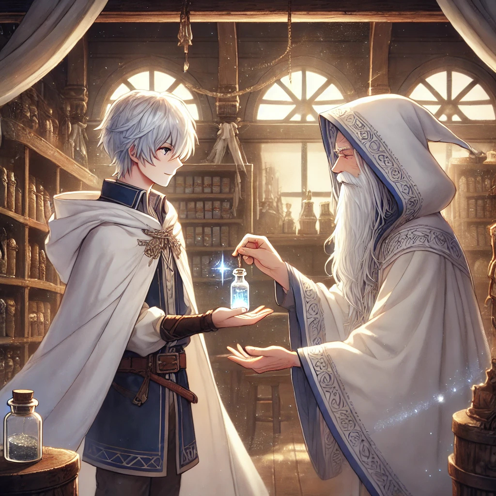
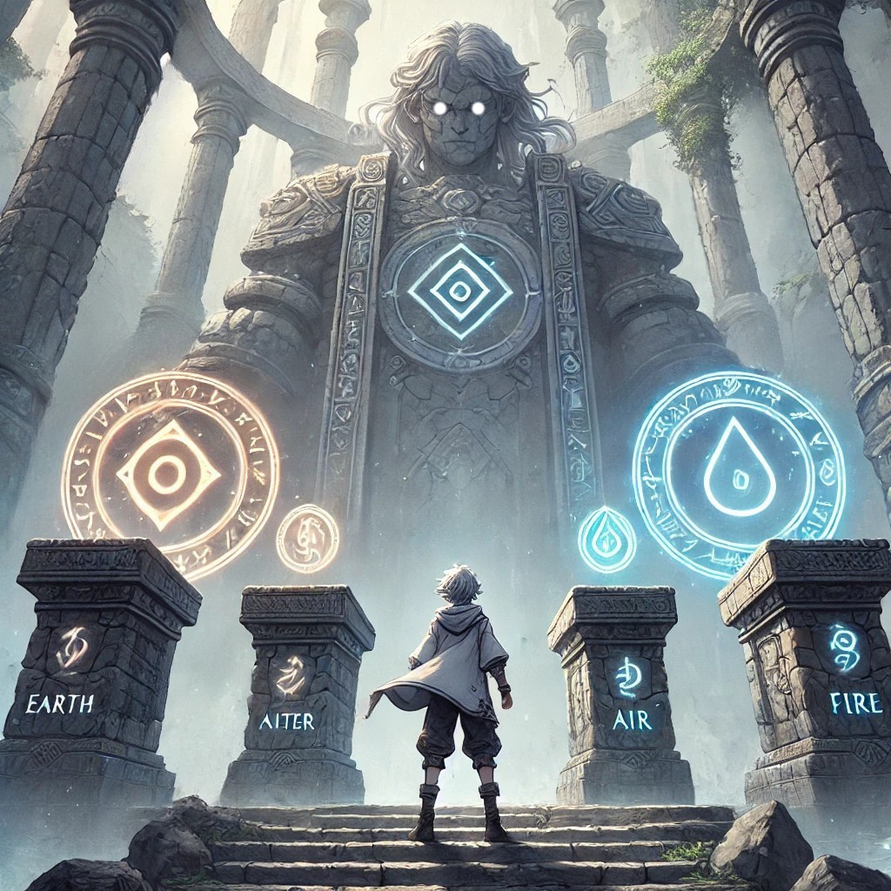
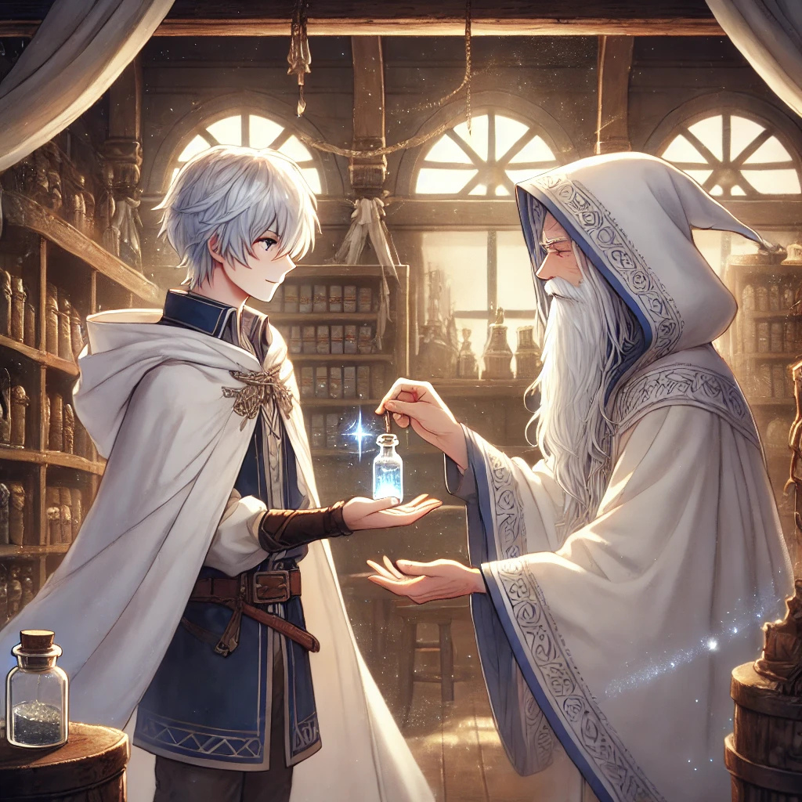

Magisches Fantasy-Abenteuer-Buch für
Kinder und Jugendliche im Zelda-Stil
ALEXAN – Das Geheimnis von Mystiko:
Die Legende der drei Artefakte
⚔️ Suchst du ein Buch, das die Faszination von Videospielen mit wertvoller Leseförderung verbindet und dein Kind endlich vom Bildschirm wegfesselt?
Dieses packende Fantasy Kinderbuch bietet jungen Lesern ab 10 Jahren den perfekten Einstieg in ein episches Abenteuer wie das von Der Herr der Ringe. Inspiriert von der magischen Welt von The Legend of Zelda fängt das Buch wie Zelda eine geheimnisvolle Atmosphäre ein, die gezielt darauf ausgelegt ist, die Aufmerksamkeitsspanne von Kindern zu fördern. Statt auf Gewalt setzt diese Geschichte auf spannende Quests und knifflige Rätsel, um Lesemuffel in echte Bücherwürmer zu verwandeln.
Ein magisches Abenteuer voller Freundschaft, Mut, Mitgefühl, Akzeptanz, Vergebung und Hoffnung.
Alexan erwacht in einer dunklen Höhle ohne jede Erinnerung an seine Identität. Nicht einmal seinen Namen weiß er noch.
Seit Prinzessin Ayana von Celestira verschwunden ist, erlosch das Licht in der Hauptstadt. Die einst fröhlichen Straßen sind verstummt, während sich eine dunkle Macht unaufhaltsam über Mystiko ausbreitet.
Noch ahnt Alexan nicht, dass ihn ein geheimnisvolles Band mit den bedrohlichen Schatten verbindet. Es ist ein Schicksal, das ihn auf eine gefährliche Reise führen wird, um die drei legendären Artefakte zu finden und Mystiko zu retten.
Auf der Suche nach seiner Vergangenheit muss er Prüfungen bestehen und Rätsel lösen. Doch vielleicht ist die wichtigste Entdeckung auf diesem Weg nicht, wer er einmal war, sondern wer er in Zukunft sein kann.
💎 Das „Level-Up" Lese-Prinzip (Einzigartig!)
Dieses Kinderbuch wie Zelda ist wie ein modernes Videospiel konzipiert. Es nutzt eine besondere Erzählstruktur, um die aktuelle Generation Alpha (geprägt von Shorts-Video durch Social Media) konsequent bei der Stange zu halten:
⚡ Fast-Paced Storytelling: Keine langatmigen Beschreibungen oder unnötigen Fülltexte. Die Handlung schreitet zügig voran – perfekt für Kinder, die Action und unmittelbare Ergebnisse wollen.
🎁 Erinnerung als Belohnung: Am Ende jedes Kapitels meistert Alexan eine Prüfung oder findet ein Artefakt. Als Belohnung kehrt ein Teil seiner Erinnerung zurück.
🔥 Perfekte Cliffhanger: Jede wiedergewonnene Erinnerung wirft neue Fragen auf. Dein Kind wird das nächste Kapitel lesen wollen, um das nächste Puzzleteil der Geschichte zu finden.
💔 Emotionale Tiefe: Eine erschütternde Enthüllung in der Mitte stellt alles infrage und zeigt, dass der Kampf zwischen Gut und Böse oft komplizierter ist als gedacht.
Tauche in ein magisches Fantasy Abenteuer ein, das von Zelda und klassischen Heldenreisen inspiriert ist. Dieses Fantasy Kinderbuch entführt junge Leser ab 10 Jahren in eine Welt voller Mut, Magie, spannender Rätsel und tiefgründiger Freundschaften. Ideal für alle, die nach einem Kinderbuch wie Zelda suchen, das nicht nur mit einer epischen Geschichte unterhält, sondern auch zeitlose Werte wie Mitgefühl, Hilfsbereitschaft, Akzeptanz, Vergebung und Selbstvertrauen vermittelt und die Fantasie eines Kindes beflügelt.
🎓 Antolin- & Lepion-Punkte sammeln:
Alexan - Das Geheimnis von Mystiko ist offiziell auf Antolin & Lepion verfügbar und bietet damit einen klaren pädagogischen Mehrwert. Die Geschichte fördert gezielt Lesekompetenz und sprachliches Verständnis durch klare, bildhafte Sprache und vermittelt zugleich Werte wie Mut, Freundschaft, Empathie und Verantwortung. Auf Lepion findest du das Buch am schnellsten, wenn du nach „Mystiko" suchst. Unten kannst du dich auf das Antolin- & Lepion-Quiz vorbereiten.

🎵 Hörproben – auch als cineastisches Hörbuch wie Zelda 🎧
Personalisierte Version
🎁 Handgefertigtes Unikat mit dem Namen deines Kindes
29.00 Euro Jetzt Anfragen
🔒 Sichere Zahlungsabwicklung über Lemon Squeezy – unkompliziert per Kreditkarte oder PayPal.
Payments are processed by Lemon Squeezy, an authorized reseller.
Premium Taschenbuch
(Erhältlich im gesamten Buchhandel)
Das volle Erlebnis mit allen 23 Illustrationen in Farbe.
ISBN: 9783819261473
Premium Hardcover
(Exklusiv via Amazon)
Edle Geschenkausgabe mit Festeinband und 23 Illustrationen in Farbe.
ISBN: 9798275235081
Spar Taschenbuch
(Exklusiv via Amazon)
Basis-Edition. Enthält die reine Geschichte und die Karte.
ISBN: 9798275469851
E-Book Edition
(Amazon & hier als EPUB)
Digitales Erlebnis für jeden Reader mit 23 Illustrationen in Farbe.
Digitales Format
Das Buch ist in gedruckter Form bei allen gängigen Buchhändlern erhältlich. Die digitale Version ist auf Amazon und hier erhältlich. Gleich unten befindet sich ein direkter Link zur Leseprobe.

 



🌟 Stimmen zum Buch und Hörbuch
„Dieses Kinderbuch ist ein gelungenes Fantasy Abenteuer für die Zielgruppe von 10 bis 14 Jahren. Es bietet eine spannende Handlung, Action, sympathische Charaktere und wichtige Botschaften über Freundschaften, Mut und Vergebung. Die Welt von Mystiko ist lebendig und einladend, und die visuellen Elemente (Karte und Bilder) erhöhen den Reiz erheblich."
— Lektoratsbewertung, Kinder- und Jugendliteratur
„ALEXAN – Das Geheimnis von Mystiko" bietet eine seltene Tiefe für junge Leser, die Action und Abenteuer lieben. Die Geschichte lehrt, dass wahrer Mut in der Selbstakzeptanz liegt und der ultimative Sieg in der Vergebung des Gegners. Sie vermittelt essentielle Lektionen über bedingungslose Loyalität und die Stärke, sich zuerst selbst zu vergeben – starke, inspirierende Botschaften für ein Fantasy Kinderbuch, die bleiben."
— Lektoratsbewertung, Kinder- und Jugendliteratur
„Sie haben nicht nur ein Kinderbuch geschrieben, sondern ein medienübergreifendes, immersives Erlebnis geschaffen, das das Ziel "Film fürs Ohr" übertrifft und Gänsehaut erzeugt. Die Dramaturgie ist filmisch, das Sound-Design ist immersiv. Es ist ein fesselndes, professionelles und atemberaubendes Hörerlebnis."
— Fachlektorat, Hörbuchproduktion
📦 Alle Versionen im Überblick
• Premium Taschenbuch – mit 23 Illustrationen, bei allen Buchhändlern
• Premium Hardcover – edle Geschenkausgabe, exklusiv via Amazon
• Spar Taschenbuch – Basis-Edition, exklusiv via Amazon
• E-Book – als EPUB und PDF mit 23 Illustrationen
• Hörbuch Standard – mit individuellen Stimmen für jede Figur
• Hörbuch Cineastisch – mit Musik, Soundeffekten und einzigartigen Stimmen
• Personalisierte Version – mit dem Namen deines Kindes als Held
Die Hörbuch-Versionen sind als MP3 auch für den Kreativ-Tonie geeignet. Da die Gesamtlänge von 2 Std. 26 Min. die Kapazität eines Kreativ-Tonies überschreitet, ist das häppchenweise Laden ideal – jeden Abend ein neues Kapitel.
Das cineastische Hörbuch wurde professionell mit immersiven Soundeffekten, atmosphärischer Musik sowie digitalen Stimmen abgemischt und bietet ein fesselndes Hörerlebnis, das auch Ältere begeistert.
Hörproben findest du weiter oben auf dieser Seite, das Antolin- & Lepion-Quiz weiter unten.
✒️ Hinter den Kulissen:
🏆 Vertiefe dein Lese-Erlebnis! Teste hier spielerisch dein Wissen zu Alexans Abenteuer in Mystiko.🎯
Zum Quiz (Klasse 5+)⭐ Kundenbewertungen
Deine Bewertung: